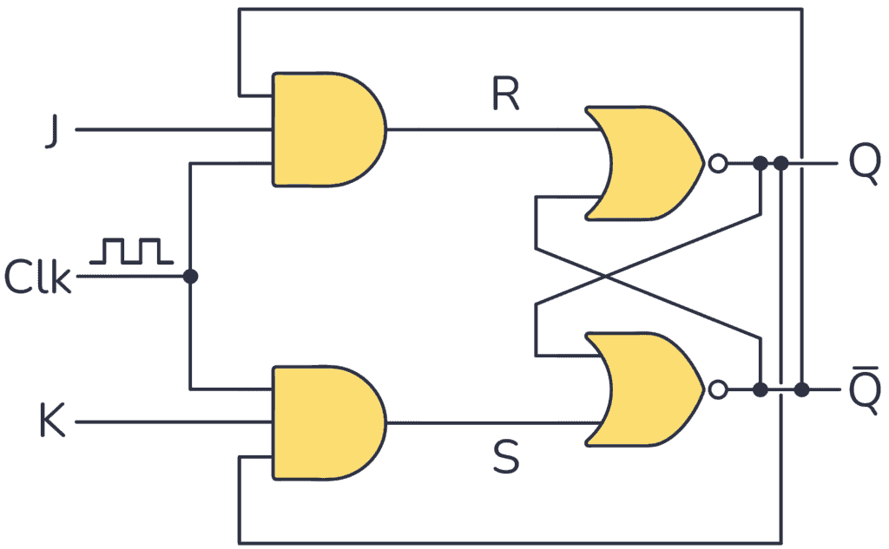
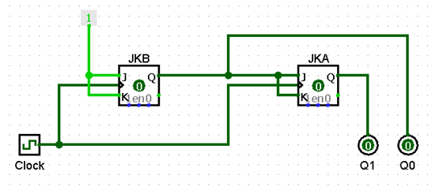

Using J-K Flip-flops to build Synchronous Counters
Objectives
On completion of this section, you should be able to:
- Understand the function of a synchronous counter
- Use J-K Flip-flops to design a synchronous counter
What's a Synchronous Counter?
Simply put, a synchronous counter uses a clock pulse to trigger each flip-flop used in the counter at the same time. We'll use the 4-step process to help us in designing our counter.
The 4-Step Process
We will look at the following example:
Design a synchronous counter with the following repeated binary sequence:0,1,2,3. Use J-K flip-flops
Step 1: Develop the State Diagram
A state diagram, although not necessary, is a useful tool to help visual what is going on.

Fig. 1: State Diagram of the binary sequence 0,1,2,3
We can see that when the counter is displaying 0, we know the next number it will display is 1, and when it displays 1, the next number is 2. Also remember that the counter would not output decimal numbers but binary, so that’s what we’re seeing on the right-hand side of the table.
You may also recall that it was stated before flip-flops can only ever output a 1 or a 0, so how is it that they can output 01 and 10? This output is actually the combination of the flip-flops in the circuit, so for example if flip-flops Q3, Q2, and Q1, output binary numbers 1, 0, and 1 respectively, that output would combine and form 101, otherwise known as 5 in decimal.
Step 2: Develop the Present-State Next-State Transition Table
In this step, we utilize the excitation table to complete our Present-State Next-State Transition Table. Recall the excitation table for J-K flip-flops.

Fig. 2: Excitation Table for J-K Flip-flop
For clarity, let's create a table that shows the present and next states.
Looking at our state diagram, we see we move from 0 to 1, 1 to 2, 2 to 3 and then from 3 to 0.
 This shows our present state and next state (first, our present state is 0 and our next state is 1. Then our new present state is 1 and our next state is 2, etc). With this information, we can create our table:
This shows our present state and next state (first, our present state is 0 and our next state is 1. Then our new present state is 1 and our next state is 2, etc). With this information, we can create our table:
.png)
Using the right side of the table above and the excitation table, we develop the Present-State Next-State Transition Table
Fig. 3: Present-State Next-State Transition Table
To get the J and K outputs, look at the present and the next state and compare it to the excitation table.
For example, let's look at the first row. We have 0 for the Q(A) input and 0 for the Q+(A). Using the excitation table, 0 and 0 gives 0 for the J input and X for K. So J(A) is 0 and K(A) is X.

We do the same for Q(B) and Q+(B) and continue this process for all of the present and next states.
Step 3: Simplify the expressions for each of the inputs
We can use Boolean Algebra, Karnaugh Maps or even Quine-McCluskey for simplification. For this example, Karnaugh Maps are used to show the resulting boolean expressions.
.png)
.png)
If you’re still not quite sure how to create a Karnaugh map you can check out our notes on Karnaugh maps
Step 4: Implement the circuit
After all of our hardwork, we get to put the circuit together!
 Download the Logisim circuit hereGeneral guidelines for building counters
We've just built out a synchronous counter for the repeated sequence 0,1,2,3 using J-K flip-flops, but what if we wanted to build out a counter using T flip-flops, or D flip-flops? Luckily, the process of building out a synchronous counter follows the same 4-step process we've outlined above. Just as a reminder, the steps are:
- Step 1: Develop the State Diagram
- Step 2: Develop the Present-State Next-State Transition Table
- Step 3: Simplify the expressions for each of the inputs
- Step 4: Implement the circuit
So, here's a new question:
Develop a synchronous counter for the repeated sequence 0,3,2,1 using:
- T flip-flops
- D flip-flops
We suggest you try to do these questions on your own (you can look back at these notes for reference, of course). Just remember that the Present-State Next-State tables for the different types of flip-flop will vary, but the simplification process using Karnaugh maps and the implementation of the circuit will be essentially the same.
To get you started, here's the Present-State Next-State Transition table for the T flip-flop and D flip-flop for the sequence 0,3,2,1:

Fig. 4: Present-State Next-State Transition Table for D flip-flop sequence 0,3,2,1

Fig. 5: Present-State Next-State Transition Table for T flip-flop sequence 0,3,2,1
Note: At is Q(A), A t+1 is Q +(A)
Confused on how we got here? Take a look back at our D flip-flop notes and T flip-flop notes
When you're done completing all the steps and have built your circuit, feel free to click here and download our circuits to check your answer against ours. If you want even more practice, head to the Test Section to play our game!